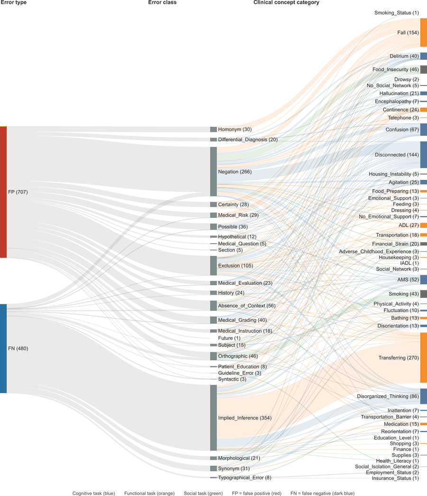
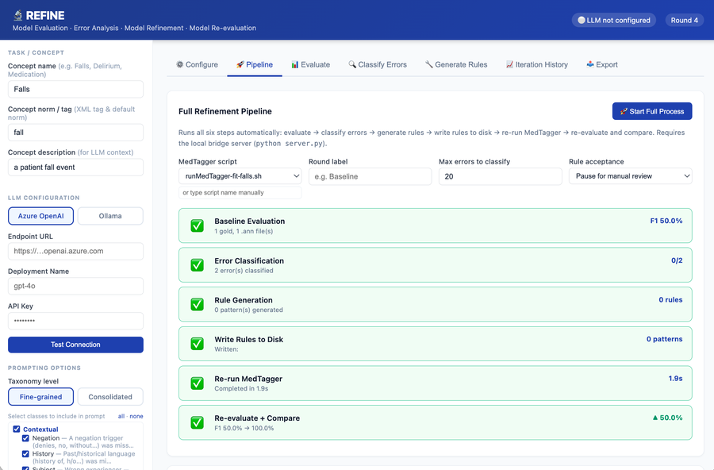
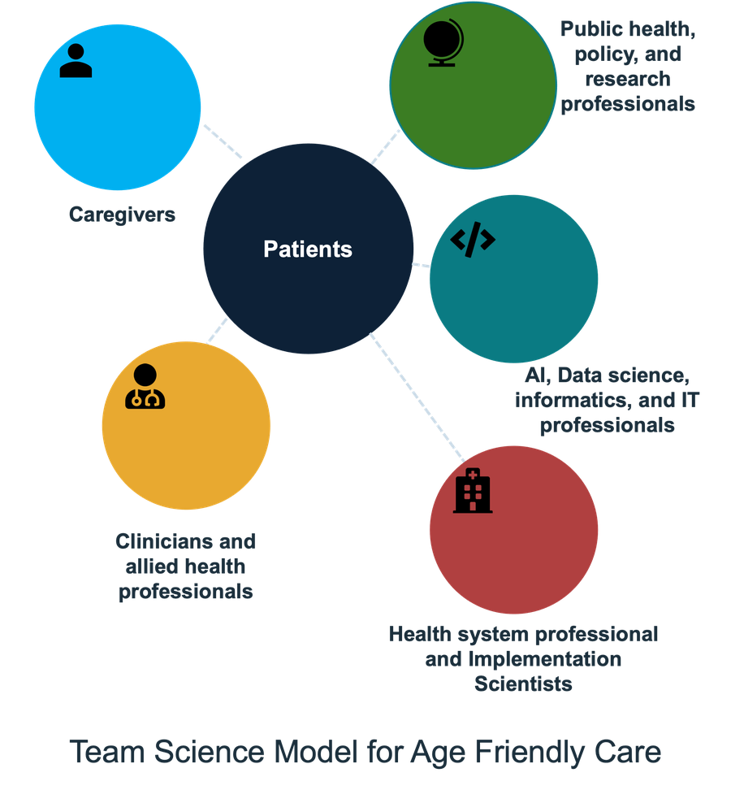

A closer look at the tools, models, and frameworks behind our three research acts, Modeling, Translating, and Scaling.

A Sankey diagram tracing false positive and false negative NLP errors from error type, through error class, to the clinical concept category affected, part of our systematic error-analysis framework for multi-site clinical NLP.

REFINE, our tool for evaluating, classifying, and iteratively refining clinical NLP models, shown here running a full refinement round on the Falls concept, from baseline evaluation through error classification, rule generation, and re-evaluation.

Patients at the center, connected to caregivers, clinicians and allied health professionals, AI/data science/informatics/IT professionals, health system professionals and implementation scientists, and public health/policy/research professionals, the full team it takes to build an age-friendly learning health ecosystem.